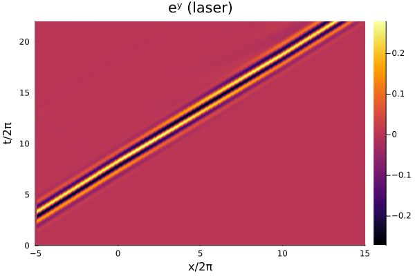
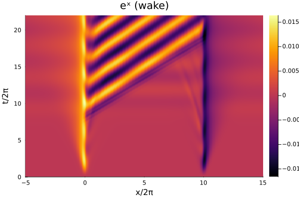
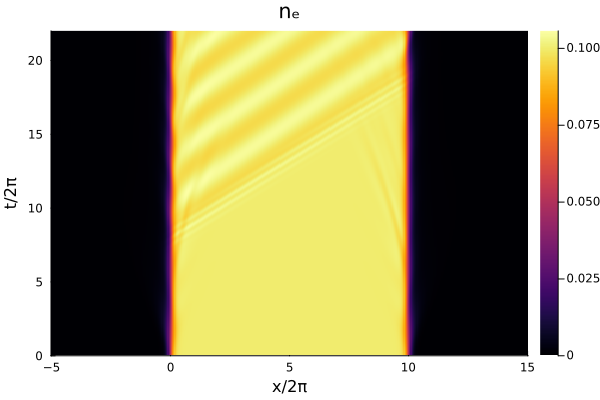
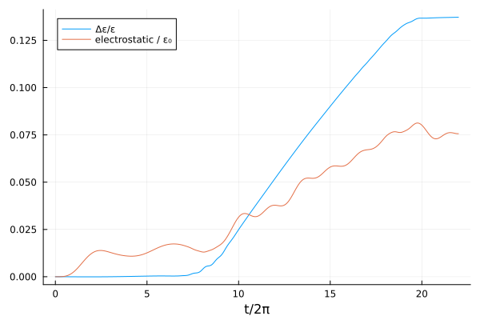
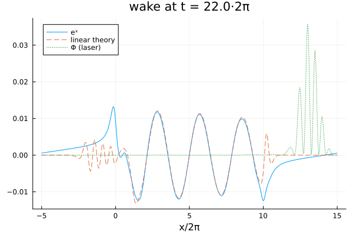

Laser wakefield
Its excitation in a 1D1V plasma slab, against linear theory.
julia --project=verification verification/wakefield.jlThe physics lives in wakefield in test/verification_harness.jl, so that this script and the test asserting its claims run the same code rather than two copies that drift. Before that extraction there was nothing for a test to call, which is why the README's "runs and is stable" went unasserted for as long as it did.
The laser drives the wake through the ponderomotive force −∂/∂x (pʸ² + pᶻ²)/2 in the momentum advection. Until that term was added there was no coupling at all: the laser never entered the longitudinal push, and what this script drew and called a wake was the slab edges relaxing. The comparison against linear theory below is the one the test asserts – see linear_wake.
using Plots
using Vasilek
include(joinpath(pkgdir(Vasilek), "test", "verification_harness.jl"))
r = wakefield()
here = @__DIR__;The laser field over space and time. This used to be heatmap(x, t, em.ey), passing the final snapshot – a length-Nx vector – where a Nt×Nx matrix was wanted. It never raised, because a script never renders the plot.
savefig(heatmap(r.x/2π, r.t/2π, r.ey; xlabel = "x/2π", ylabel = "t/2π",
title = "eʸ (laser)"),
joinpath(here, "wakefield-laser.png"));
savefig(heatmap(r.x/2π, r.t/2π, r.ex; xlabel = "x/2π", ylabel = "t/2π",
title = "eˣ (wake)"),
joinpath(here, "wakefield-wake.png"));
savefig(heatmap(r.x/2π, r.t/2π, r.n; xlabel = "x/2π", ylabel = "t/2π",
title = "nₑ"),
joinpath(here, "wakefield-density.png"));
Energy diagnostics were accumulated but never shown.
energy = plot(r.t/2π, (r.ε .- r.ε[1])./r.ε[1]; label = "Δε/ε", xlabel = "t/2π")
plot!(energy, r.t/2π, r.ε_e./r.ε[1]; label = "electrostatic / ε₀")
savefig(energy, joinpath(here, "wakefield-energy.png"));
The wake at the final time against the wake linear theory puts behind the same drive. This is the picture the test makes assertions about: the two agree to 6.4% in amplitude and to 6.4% of the theory's own rms pointwise.
ref = linear_wake(r.x, r.t, r.Φ, r.nᵢ; temperature = r.plasma_temperature)
theory = plot(r.x/2π, r.ex[end, :]; label = "eˣ", xlabel = "x/2π",
title = "wake at t = $(round(r.t[end]/2π; digits = 1))·2π")
plot!(theory, r.x/2π, ref; label = "linear theory", linestyle = :dash)
plot!(theory, r.x/2π, r.Φ[end, :]; label = "Φ (laser)", linestyle = :dot)
savefig(theory, joinpath(here, "wakefield-theory.png"));
v, _ = pulse_velocity(r.t, r.x, r.Φ; lo = 5.0, hi = 55.0)
λ, _ = wave_period(r.x, r.ex[end, :]; lo = 8.0, hi = 55.0)
Δx, Δt = r.x[2] - r.x[1], r.t[2] - r.t[1]
v_theory = vg_pulse(r.plasma_density, Δx, Δt; duration = 2π)
println("final Δε/ε = ", (r.ε[end] - r.ε[1])/r.ε[1])
println("peak wake field = ", maximum(abs, r.ex))
println("peak laser field= ", maximum(abs, r.ey))
println("resolution = ", round(2π/Δx; digits = 1), " cells per laser wavelength")
println("pulse velocity = ", v, " against ", v_theory,
" from the discrete dispersion relation (continuum ",
sqrt(1 - r.plasma_density), ")")
println("wake wavelength = ", λ, " against ",
wake_wavelength(v, r.plasma_density, r.plasma_temperature),
" from the measured driver, ",
wake_wavelength(v_theory, r.plasma_density, r.plasma_temperature),
" from the predicted one")final Δε/ε = 0.13722265843340822
peak wake field = 0.016650270328093252
peak laser field= 0.2793961486603262
resolution = 20.0 cells per laser wavelength
pulse velocity = 0.9260978694079458 against 0.9329141410733877 from the discrete dispersion relation (continuum 0.9486832980505138)
wake wavelength = 18.00937302240994 against 18.076116588054635 from the measured driver, 18.213964719073466 from the predicted one
This page was generated using Literate.jl.